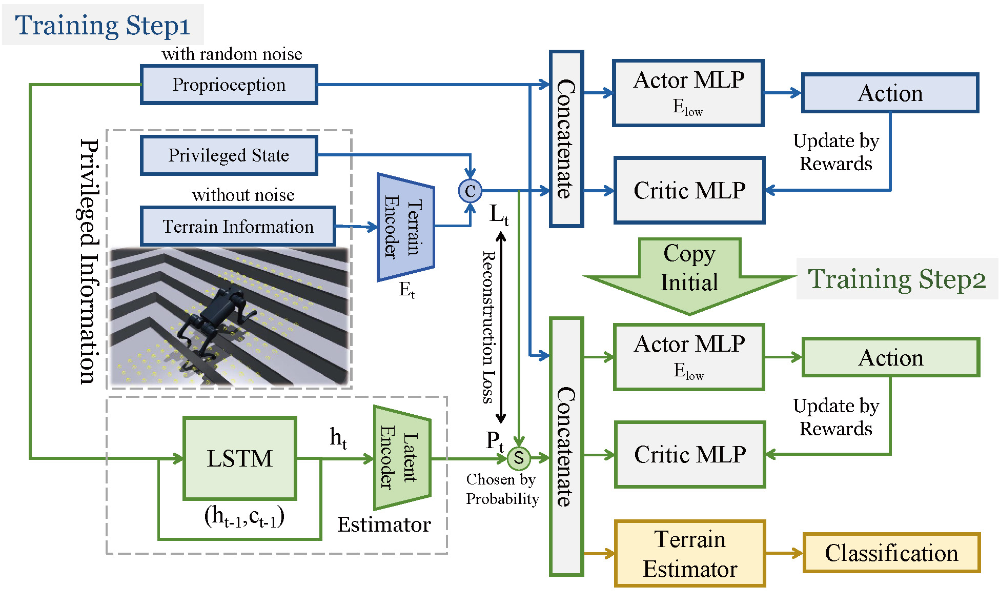

Pipeline


The application of vision-language models (VLMs) has achieved impressive success in various robotics tasks, but there are few explorations for foundation models used in quadruped robot navigation. We introduce Cross Anything System (CAS), an innovative system composed of a high-level reasoning module and a low-level control policy, enabling the robot to navigate across complex 3D terrains and reach the goal position.
For high-level reasoning and motion planning, we propose a novel algorithmic system taking advantage of a VLM, with a design of task decomposition and a closed-loop sub-task execution mechanism. For low-level locomotion control, we utilize the Probability Annealing Selection (PAS) method to train a control policy by reinforcement learning.
Numerous experiments show that our whole system can accurately and robustly navigate across complex 3D terrains, and its strong generalization ability ensures the applications in diverse indoor and outdoor scenarios and terrains.

TBAWebsite template borrowed from nerfies.